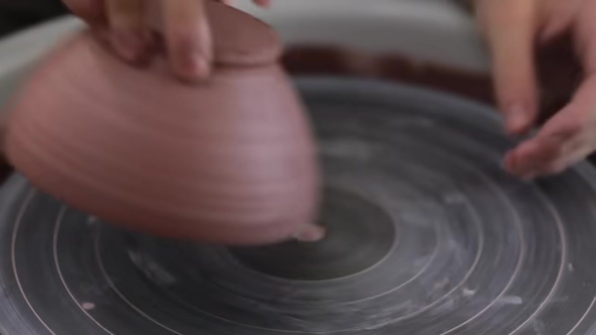

self-improve-bench
Visual Predict Demo — Can a model learn techniques from tutorial videos and apply them to a new situation?
Setup: You are making a pottery bowl. You have watched tutorial videos (silent) that teach pottery techniques. Now your video stops at a moment during the work. Based on what you see and what you learned from the tutorials — what do you do next?
Target: Florian Gadsby — Throwing and Turning a Pottery Bowl (14 min, ASMR, no narration)
Tutorials: 6 videos from 5 different channels (all silent/ASMR), covering centering, throwing, trimming, glazing
Tutorial Videos (what you watched before starting)


+ Florian Gadsby teapot ASMR (23 min) + Florian Gadsby trimming ASMR (16 min) + NowWhat plates trimming (7 min)
Question 1 — t = 354s

What you see at t=354s: a pottery studio, a bowl-shaped clay body sits on the spinning wheel.
You are in a pottery studio, having just moved a board of bowls aside. A bowl-shaped clay body sits on the spinning wheel. What do you do next?
Use a ring-shaped pottery tool to trim excess clay from the side of the bowl-shaped clay body on the spinning wheel, steadying the top with one hand.
WHEN: The bowl is upside down, with a flat bottom that has uneven, rough edges and a coarse surface, with small lumps of clay attached to the wheel around the base.
DO: Hold a loop tool at a consistent angle against the spinning clay, moving gradually from the outer edge toward the center to carve concentric rings and remove excess clay, with the other hand resting on the wheel for stability.
"Wet my hands and begin centering the clay on the spinning wheel."
Guessed the wrong stage entirely — thought the bowl hadn't been formed yet.
The bowl is already shaped and sitting on the wheel. A beginner would not know this is the trimming stage (the bowl was thrown earlier). The tutorials show: when you see a rough-bottomed pot on the wheel, you use a loop tool to trim. Without that knowledge, the obvious guess is "start shaping" or "smooth it."
Question 2 — t = 360s

What you see at t=360s: an inverted clay pot centered on the wheel, your left hand steadying its side.
You are steadying an inverted clay pot on the spinning wheel, with your left hand near its side. What do you do next?
Use a ring-shaped trimming tool to trim the outer side of the upside-down bowl, pressing the base with one hand to steady it while shaving off excess clay in long strips.
WHEN: The bowl is upside down, with a flat bottom that has uneven, rough edges and a coarse surface.
DO: Hold a loop tool at a consistent angle against the spinning clay, moving gradually from the outer edge toward the center, with the other hand resting on the wheel for stability.
"Use a trimming tool in your right hand to trim the bottom of the pot."
Got the general idea (trimming) but specified the wrong area (bottom vs. outer side) and missed the technique detail (consistent angle, long strips).
A beginner might guess "smooth it" or "trim the bottom." The tutorials specifically show: when steadying an inverted pot, use the loop tool on the outer side first, not the bottom. The technique — consistent angle, gradual movement, shaving long strips — is learned from watching, not guessable.
How these questions were generated
Visual Predict Pipeline — no audio, no transcription, purely visual:
- VL catalogues tutorials — watches each tutorial video, logs the operation sequence (action + technique detail + state changes)
- DS distils visual rules — from 42 operations across 6 tutorials, extracts 53 if-then rules; 33 excluded for cross-tutorial preference splits
- DS finds decision points — scans target video catalogue for moments where the next step requires tutorial knowledge
- VL confirms at cut point — sees exactly what is on screen at the cutoff
- DS writes question — stem only references what is visible; answer is what actually happened next
- Screening — A0 baseline must get it wrong (otherwise too easy); VL verifies the scene matches